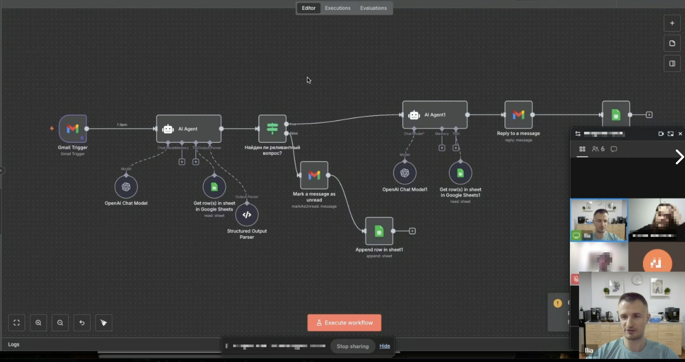
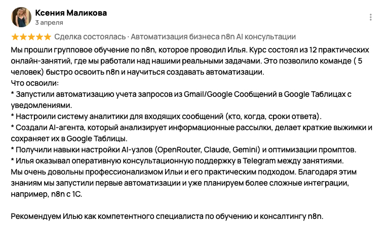

Корпоративное обучение n8n + AI

Бухгалтерия французской логистической группы — 5 человек, нулевой технический бэкграунд. 12 онлайн-сессий, работа на реальных задачах компании, не абстрактный курс.
Что освоили:
→ Учёт запросов из Gmail в Google Таблицах с уведомлениями
→ Аналитика входящих сообщений: кто, когда, сроки ответа
→ AI-агент, который читает рассылки, делает выжимки и сохраняет в Sheets
→ Настройка AI-узлов (OpenRouter, Claude, Gemini) и оптимизация промптов
После второго занятия команда самостоятельно собирала воркфлоу с Gmail + AI Agent + conditional logic. Сейчас планируют интеграцию n8n с 1С.
«Илья оказывал оперативную консультационную поддержку в Telegram между занятиями. Очень довольны профессионализмом и практическим подходом. Рекомендуем как компетентного специалиста по обучению и консалтингу n8n.»
